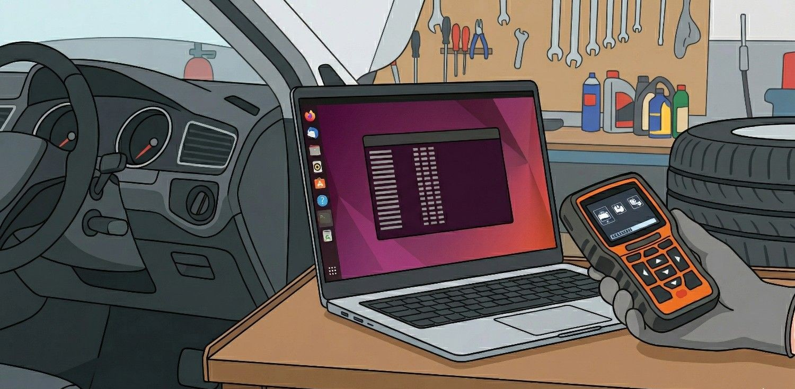
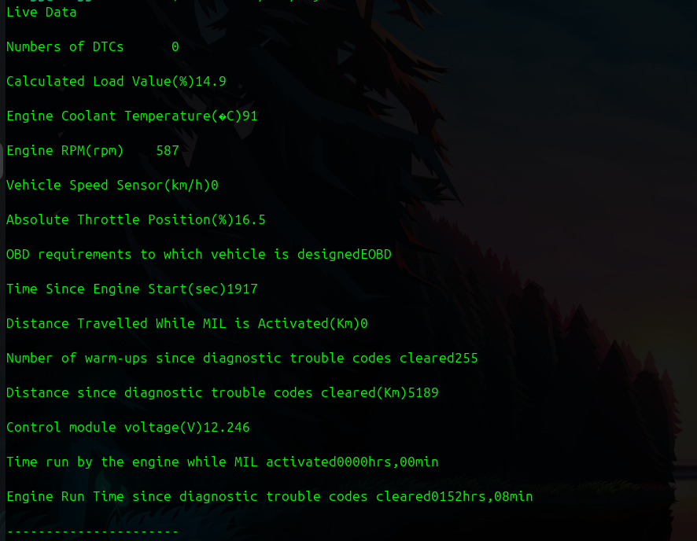

If you have ever tried to update or read data from a car scanner like the Foxwell NT301 on Linux, you have likely hit a wall. The official "NTWonders" software is Windows-only, and trying to get it to work via Wine often feels like a full-time job with zero pay. But here is the secret: The scanner doesn't actually need the software to give you the data. When you put the NT301 into "Print" mode, it streams your car's saved diagnostic data as raw text over the USB port. Here is how to "hack" your way into your car's data using nothing but the Ubuntu terminal.
First, plug your Foxwell into your USB port and power it on. In Ubuntu, the device is recognized as a serial modem. Open your terminal and find out where it lives:
ls /dev/ttyACM*
You should see something like /dev/ttyACM0. That is your scanner.
By default, Ubuntu will not let you "listen" to a serial port for security reasons. Give yourself permission by adding your user to the dialout group:
sudo usermod -a -G dialout $USER(Note: You will need to log out and back in for this to take effect!)
Now, we are going to use the cat command to "pour" the data from the scanner directly into the terminal. Run this:
sudo cat /dev/ttyACM0Now, on your Foxwell NT301 physical device:

Viewing data in a terminal is cool, but if you want to save it for your mechanic or a forum, you should save it to a file. Run this command to save the stream to a text file (change the name my_car_report as any name you need):
sudo cat /dev/ttyACM0 > my_car_report.txtOnce the scanner goes back to data locations window, press Ctrl+C in the terminal to stop the capture. You now have a clean .txt file ready to be emailed or printed.